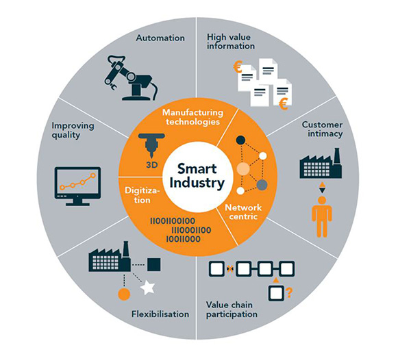

Technologieën op het gebied van Robotics, Data Analytics, Machine Learning, enz. zijn inmiddels volwassen geworden en grotendeels mainstream als het gaat om toepassing. De uitdaging voor de meeste organisaties ligt in de vertaling van de beloftes die deze innovaties bieden naar daadwerkelijke economische en maatschappelijke waarde. Door de hele waardeketen zodanig in te richten dat de nieuwe technologieën optimaal kunnen bijdragen aan winsten op het gebied van efficiëntie en kwaliteit, ontstaat Smart Industry.

Door de overheid is een Actieagenda Smart Industry opgesteld. Doel van de agenda is het Nederlands bedrijfsleven te mobileren en tot de kopgroep in de wereld te laten horen op het gebied van slimme productie. Help je mee van Nederland een winnend team te maken? Schrijf je in voor de minor Smart Industry van de Hogeschool van Arnhem en Nijmegen!
Witek ten Hove
Coördinator Minor Smart Industry
Hogeschool Arnhem en Nijmegen